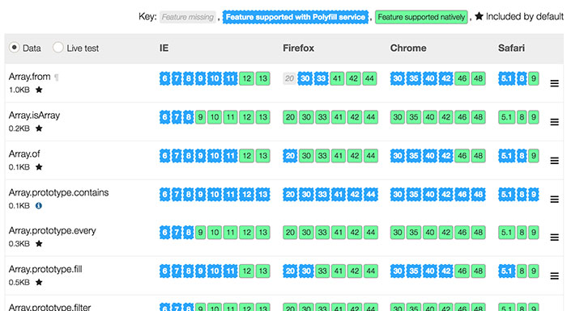
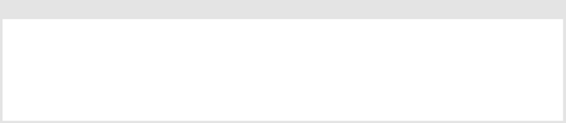
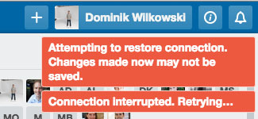
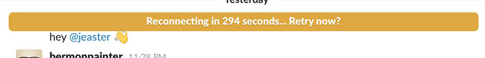
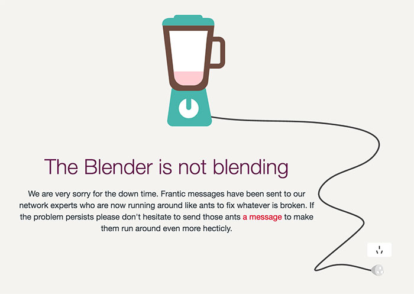
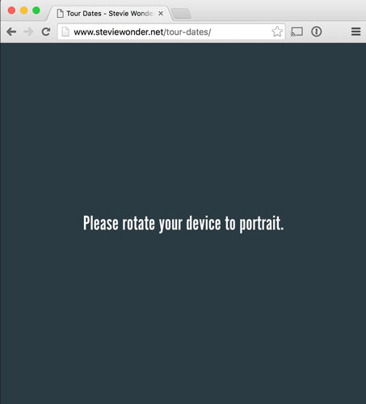
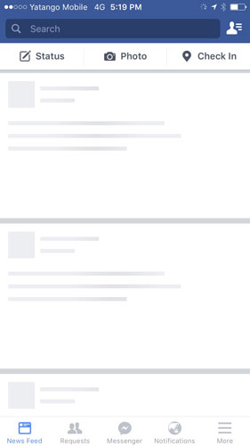
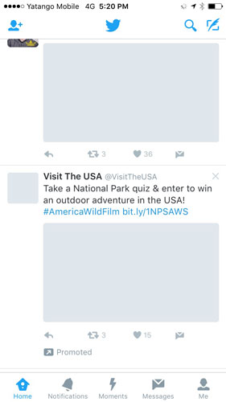

My favourite a11Y things
Or why a11y doesn’t stop with screen readers
By Dominik
More than screenreaders
- Blindness
- Colour blindness
- Cognitive impairements
- Motion and hearing impairements
- Vestibular disorders
- Many more …
"Slow Keys"

Please don't disable the zoom
<meta name="viewport" content="
width=device-width,
initial-scale=1,
maximum-scale=1,
user-scalable=no
">
@-ms-viewport { width: device-width; zoom:1.0; }
Parallax can cause vertigo / motion sickness
Outlines
Color AND shape
SVG accessibility
<svg aria-labelledby="title-download">
<title id="title-download" lang="en">Download symbol</title>
<path class="icons-background" d="M27.8 etc…"></path>
</svg>
<svg role="img" title="Download symbol">
<use xlink:href="sprite.svg#download"/>
</svg>
Slow internet
-
Remote areas in Australia
(Almost everywhere in Oz really) -
Remote areas not in Australia
(Almost everywhere else really) - Train / Bus in tunnel
- Old contract only includes EDGE connection
- Student in a library
- Public wifi
User feedback
- 
- 
- 
- 
- 
Offline first
- 
- 
-
-
W3C Specifications
(awesome GitHub repo) -
A LIST APART article
- Remain functional and store locally, add to a queue
- Offline is not an error.
- Commuicate a possible risk of something being out of sync
-
Separation of concerns
- Keep style and content separated
- HTML (no CSS) is the best fallback
- Progressive enhancements
HTTP/2
- No more http request counting
- Modularize all the things
- Inlining critical CSS = Anit Pattern
Slow device
- xxx
- xxx
- xxx
- xxx
- xxx
- xxx
Use CSS for animations and fancy effects (degrade to just show and hide in older devices)
Test your performance (60fps, #perfmatters)
Data cap
- xxx
- xxx
- xxx
- xxx
- xxx
- xxx
Be mindful of the data you send
No webfonts for mobile (two font stacks)?
Make use of the browser cache (don't compile for each page)
Ad blockers and privacy
- xxx
- xxx
- xxx
- xxx
- xxx
- xxx
false positive -> no-js
Don't use icon fonts
HTTPS and letsencrypt
test your cert with ssllabs.com for common security flaws
API
- xxx
- xxx
- xxx
- xxx
- xxx
- xxx
there are other things out there than REST
format (JSON > XML > plain text?)
usable from browser? why?
status page for up-times and issue tracking
test(human and unit tests) your endpoints, constantly
scale! before you need to
document and publish examples
Documentation
- xxx
- xxx
- xxx
- xxx
- xxx
- xxx
communicate to humans (be visual)
make your docs accessible (duh!)
provide searches
give ways out for frustrated stuck users
code examples
more than one way (videos, docs, playgrounds)
Tabs vs spaces
- xxx
- xxx
- xxx
- xxx
- xxx
- xxx
tabs for indentation, spaces for alignment (hate me now!)
Coding Styleguide
- xxx
- xxx
- xxx
- xxx
- xxx
- xxx
for on-boarding and the rogue bus hitting your engineers
Customer interactions
- xxx
- xxx
- xxx
- xxx
- xxx
- xxx
communicate failures and be open about it (apologise)
communicate changes and challenges
take pride
get excited (it's infectious)
Facilitate open source PRs
- xxx
- xxx
- xxx
- xxx
- xxx
- xxx